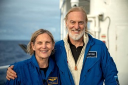
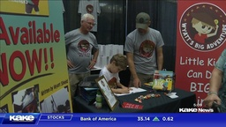

Positive:Feed
A place for all of us who feel that the news is so messed up nowadays!
If you'd like to, you can Buy me a coffee
-
‘Ee by gum’: the hunt for England’s old dialects - Positive News
Help us continue to break the bad news bias Positive News is helping more people than ever to get a balanced view of the world – one that supports their wellbeing and empowers them to make a differen...
-
Beyond GDP: changing how we measure progress is key to tackling crises
‘GDP measures everything except that which makes life worthwhile,’ said John F Kennedy. But what are the alternatives? Three economists weigh in It’s an odd quirk of history that, on the first day of...
-
What went right: why we should all go Dutch, plus more positive news
A report revealed the benefits of going Dutch The Dutch. They love to cycle, we all know that. But what if the rest of the world embraced bikes with the same gusto? Researchers at the University of S...
-
‘Liberate the tractors’: the movement that’s regaining control of our things
The successful hacking of a ‘smart’ tractor marks the latest victory for the right to repair movement. Two advocates of the campaign, Michael Stead and Paul Coulton, highlight other wins for the campa...
-
The activists taking on England’s sewage-spilling water firms and winning
Amid outcry about sewage being discharged along the English coastline, grassroots campaigners are scoring notable wins inland against water companies “Rational conversation with the authorities and w...
-
Gentle activism: five small but radical ways to improve the world now
Help us continue to break the bad news bias Positive News is helping more people than ever to get a balanced view of the world – one that supports their wellbeing and empowers them to make a differen...
-
These are the world’s best cities to live in, according to researchers
An annual index of the world’s most liveable cities is dominated by Europe and Canada. Overall, it shows a world bouncing back from the pandemic It is politically stable, with low crime, excellent he...
-
The travel editor who quit flying (and what it’s taught her so far)
When travel journalist Helen Coffey decided to quit flying, her colleagues were stunned. But she soon wondered why she hadn’t done it before Hello. My name’s Helen and I’m a (former) frequent flier. ...
-
What went right: a breakthrough for blind people, plus more positive news
A medical breakthrough offered hope to blind people Scientists have restored vision to 20 people using a bioengineered cornea made from pig skin. The breakthrough brings hope to the estimated 12.7 mi...
-
How to tackle the UK cost of living crisis – four economists have their say
From targeted help for the poorest households to continued investment in the green transition, four economists offer their solutions to the cost of living crisis UK inflation, already at 40-year high...
-
Their Bodies Age But Seniors Have Higher Emotional Well-Being – Here’s Why
Bodies lose their vigor with the passing of the years, but in the emotional realm, older people seem to rule supreme. For the past 20 years, Susan Turk Charles, a psychologist at the University of Ca...
-
Jedi Student Sneaks Lightsabers Into Graduation and Challenges Principal to Battle–WATCH
A student smuggled lightsabers into his graduation ceremony—and challenged his principal to a fun impromptu duel on stage. Star Wars fanatic Hunter Wark-Pantoja had an elaborate plan to combine his f...
-
Two-Thirds of Dog Owners Want to Get Pets Involved in Their Wedding Day
Nearly two-thirds of dog owners want to get their pets involved in their wedding day—acting as ring bearers, bridesmaids, and even the best man, according to a new poll. Of 2,000 dog owners, 60 perce...
-
Keanu Reeves Bumps Into Wedding Party and Stays For ‘Couple of Whiskies’ and Conversations in Pub
Keanu Reeves was spotted having “a couple of whiskies” and chatting with a wedding party in the UK this week—continuing his reputation as the nicest guy in Hollywood. Reeves met the groom on his wedd...
-
Good News in History, August 28
233 years ago today, German astronomer William Herschel discovered the sixth largest moon of Saturn, the icy, 500 kilometer-wide Enceladus. The 19th largest moon in the solar system, its surface is co...
-
Man Saves Tiny Bunny From Drowning – Watch it Come Back to Life
A man rescued a dying bunny that was drowning in his pool after spotting a strange reflection out of the corner of his eye. The Arizona resident noticed the rabbit while walking back inside from his ...
-
‘Off the Charts’ Hydrogel Outperforms Cartilage and May Be in Human Knees Next Year
A long awaited update to a 2020 medical breakthrough could have a natural knee-cartilage replicant on deck for replacement surgeries by 2023. Knee pain comes from the progressive wear and tear of car...
-
Mom Moved to Tears as Disabled Son Finally Gets to Play in the Sea Thanks to Beach Wheelchair –WATCH
A little boy finally got to play in the sea, thanks to the use of a beach wheelchair—and his laughter brought his mom to tears. Joey has quadriplegic cerebral palsy, which affects both of his arms an...
-
Your Inspired Weekly Horoscope From Rob Brezsny: A ‘Free Will Astrology’
Our partner Rob Brezsny provides his weekly wisdom to enlighten our thinking and motivate our mood. Rob’s Free Will Astrology, is a syndicated weekly column appearing in over a hundred publications. H...
-
Good News in History, August 27
67 years ago today, the first-ever edition of the Guinness Book of World Records was published. The brainchild of a South African businessman and engineer, the book was a hit in England by Christmas. ...
-

See What Magic Happens When a Photographer Adds Himself to Famous Album Covers – LOOK
It’s World Photography Day—and we couldn’t find any exposures this cool to celebrate with. From old school entertainers like Frank Sinatra and Sammy Davis Jr. to rock staples like The Kinks and Todd ...
-
My Rescue Dog Saved Me By Sniffing Out My Cancer
A woman said she owes her life to a rescue dog who sensed her breast cancer and wouldn’t keep its nose out of her right armpit. Lucy Giles thought her beloved Brody was initially just craving some at...
-
NASA Detects Carbon Dioxide–the Building Block of Life–in Exoplanet’s Atmosphere for First Time
For all the grief carbon dioxide gets down here on Earth, its detection for the first time ever in the atmosphere of an exoplanet has scientists elated. The finding, produced by the James Webb Space ...
-
Watch How Texas Man Found Huge Dinosaur Tracks in Riverbed Dried From Drought
Droughts aren’t all bad. Sometimes the receding of rivers reveals amazing things, such as the tracks of a meat-eating giant that roamed Cretaceous-Era Texas 113 million years ago. Prints mostly left ...
-
Good News in History, August 26
244 years ago today, a group of men summited Triglav for the first time; the preeminent symbol of Slovenia, and the center piece of that country’s only national park. At 9,395 feet, (2,863 meters) it ...
-
Scientists Breeding Corals for the Great Barrier Reef Achieved First-Ever Out-of-Season Spawning Event
Scientists in Australia have achieved the first-ever offseason coral spawning in the history of coral breeding and restoration sciences. The breakthrough dramatically expands the capacity to grow cor...
-
Ingenious Dancers Stun Judges to Make Finals of America’s Got Talent – WATCH
A all-female Lebanese dance troupe promised to hypnotize the judges on America’s Got Talent: a bold call before performing for someone as notoriously spikey as Simon Cowell. The “Mayyas” lined up in ...
-
A Startup Is Using Recycled Plastic to 3D Print Tiny $25,000 Prefabricated Homes in LA
There’re 3D-printed homes, and there’re prefabricated homes. Take the best of both technologies, throw in a groundbreaking use for discarded plastic, and you have a genius idea. Born in Culver City, ...
-

Happy 90th Birthday to Scottish Superstar Sean Connery
Happy 71st birthday to the Metal God, Rob Halford. Undoubtedly one of the most iconic voices is rock music, the English singer-songwriter has fronted Judas Priest for nearly 50 years, across more than...
-
8-Year-old Girl Gets to Chat with Orbiting Astronaut Using Dad’s Ham Radio
Some old tech was able to make a new connection for a little English girl who got to speak with an orbiting astronaut after her dad hailed him on a Ham radio. It was August 2nd when Isabella Payne ha...
-
Man Stores Rainwater Since 1976 and Has 6,000 Liters to Get Through Drought
Even though the English government recently announced a ban on garden hose watering in the west of the country, Peter Harden has kept right on hosing worry-free. That’s because Harden has been storin...
-
Scientists Invent Ultra-Thin Battery-Like Device that Generates Electricity from Air Moisture—Perfect for Health Monitors
Imagine being able to generate electricity by harnessing moisture in the air around you with just everyday items like sea salt and a piece of fabric. That’s just what a team of researchers from Singa...
-
Scientists Stunned by New Jupiter Images With Galaxies ‘Photobombing’ the Webb Telescope
With giant storms, powerful winds, auroras, and extreme temperature and pressure conditions, Jupiter has a lot going on—and NASA’s James Webb Space Telescope has captured some incredible new images of...
-

This day in History, August 24 – Good News Network
3 years ago today, American explorer Victor Vescovo became the first man since the invention of the submersible to visit the deepest points in all five of the world’s oceans when he touched down in th...
-
First Study to Show Dogs Cry ‘Happy Tears’ When Reunited With Their Owners
Dogs cry “happy tears” when their owners come home, according to a study inspired by a scientist whose own pup welled up with joy whenever they reunited. It’s well known that dogs have tear ducts des...
-
Forest Group is Saving Scottish Habitat ‘One Sausage at a Time’
Deep in the heart of the Scottish highlands, deer hunters are fueling conservation from the sale of hunted venison. Cairngorms National Park is 1,748 square miles of pristine and unique habitat, thro...
-
Archaeologists Found a Perfectly Preserved 1,500 Year-old Arrow Inside a Glacier
Archeologists found a perfectly preserved 1,500 year old arrow inside a Norwegian glacier. It was a team of seven people from a glacier archeology program who discovered the arrow, dated to between 3...
-
Good News in History, August 23
86 years ago today, Keith Moon, the self-destructive and beloved drummer of The Who, was born in London. Moon was born in a suburb of Wembley, and took up the drums during the early 1960s. After playi...
-
6 High School Football Players Combine Their Strength to Rescue Injured Woman Trapped in a Wrecked Car
A Georgian woman is thanking her stars that it was nothing less than a group of buff high schooler football players who just happened to be passing by her when she needed help. Together they leant th...
-
Breakthrough Might Finally Destroy the Harmful ‘Forever Chemicals’ in Our Water
FAS, a group of manufactured chemicals commonly used since the 1940s, are called ‘forever chemicals’ for a reason. Bacteria can’t eat them; fire can’t incinerate them; and water can’t dilute them. And...
-
Alzheimer’s Memory Loss Reversed in Mice After Scientists Discover Method to Form New Brain Cells
Alzheimer’s has been reversed in mice after scientists at the University of Illinois-Chicago boosted the formation of new brain cells, a breakthrough that could lead to new treatments. Their gene the...
-

Vulture Soars Around a Paraglider Then Lands on His Lap – WATCH
This is the thrilling moment a vulture flies alongside a paraglider and then lands on his lap, as he soared 100-ft in the air. Ricardo Guimarães Cunha was paragliding in the mountainous region of Pac...
-

Good News in History, August 22 – Good News Network
160 years ago today, Claude Debussy was born. Born to a family of modest means and little cultural involvement, Debussy showed enough musical talent to be admitted at the age of ten to France’s leadin...
-
Scientists Finally Provide Relief For Depression By Locating Exact Target for Deep Brain Stimulation
Although it was a small study on 10 patients, researchers at the University of Texas Health–Houston were able to achieve something long out of reach, locating the G-spot where brain stimulators can ma...
-
Virtual Trip to Museum ‘Can Help People Stay Mentally–And Physically–Healthy’
Online virtual trips to a museum may benefit older people in surprising ways, suggests a new study. Researchers identified an association between regular online museum visits and a reduction of frail...
-
Hero Cat Saves Owner Who was Having a Heart Attack by Pounding its Paws on Her Chest
A hero cat saved his owner’s life by pounding his paws on her chest to wake her up after she suffered a heart attack. Sam Felstead was asleep when she was woken by her seven-year-old cat Billy at 4.3...
-

Watch Elephant Give Back a Child’s Shoe That Fell Into Zoo Enclosure – SO SWEET
A video was captured showing the moment a helpful elephant picks up a toddler‚Äôs shoe to return it. üêò‚ù§Ô∏è The 25-year-old pachyderm used its trunk to grab the sandal from the dirt and reach up to the ch...
-
Good News in History, August 21
On this day 268 years ago, William Murdoch the Scottish inventor who invented gas lighting and the steam-powered locomotive, was born in Ayrshire. For most of his professional life, Murdoch was the di...
-
People Who Play Music While Studying More Likely to Have Higher GPA, Says New Poll
If picking a playlist was your first step when studying, you’re more likely to have earned a higher GPA, according to a new poll. Of those that do listen to music while studying, 80% agree that it is...
-
Gold Could Hold the Key to Inflammatory Bowel Disease Treatment That’s Cheaper and Non-Invasive
Gold could hold the key to treating inflammatory bowel disease, according to new research. The debilitating condition, which includes both Crohn’s and ulcerative colitis, has no cure, and can prove f...
-
Mom Installs 20 Defibrillators Around Town After She Loses Teen Son to Cardiac Arrest
A British mother found a meaningful way to channel her grief. She’s getting 20 defibrillators installed across her hometown after her 18-year-old son went into cardiac arrest, and the nearest kit was ...
-
Your Inspired Weekly Horoscope From Rob Brezsny: A ‘Free Will Astrology’
Our partner Rob Brezsny provides his weekly wisdom to enlighten our thinking and motivate our mood. Rob’s Free Will Astrology, is a syndicated weekly column appearing in over a hundred publications. H...
-
Good News on This Day in History – August 20 – Good News Network
140 years ago today, Pyotr Ilyich Tchaikovsky’s 1812 Overture debuted in Moscow. While the 1812 Overture debuting in 1882 may make it seem strangely named, the piece was to commemorate the successful ...
-
Couple Quit Jobs to Travel the World in Van They Renovated and Transformed for 25K – LOOK
Quitting jobs and traveling across the country in a camper van is not a dream that’s unique to Americans—as proven by England’s Helen Weedon and Tristan Young. Together, they dumped their 9 to 5s, bo...
-
Good Gardening Week 5: How do You Protect From Drought? Is it Bad Where You Are?
Welcome back to Good Gardening! In our Week 4 discussion, we wanted to know which zone our Good Gardeners were working from, and what were the risks and benefits associated with it. We took the conver...
-
A New Detection System Could Save Sperm Whales From Ship Strikes
Greek scientists have developed technology to pinpoint a sperm whale’s location to within 40 meters of its 16 meter-long body by tracking the whale’s clicks. Through the course of their work, they st...
-
Artist Draws Astounding Portraits with Both Her Hands and Feet at the Same Time –WATCH
With a brush in each limb, a Dutch artist is going viral for her ability to draw portraits with all four hands and feet simultaneously. Rajacenna, an artist from Rotterdam, can complete up to six ill...
-
Farmer Thrives by Growing Gluten-free Grain Needing No Water During Drought
What doesn’t need irrigation, requires no pesticides, and needs only a third of the fertilizer of wheat? It’s a potential big-problem-solving grain called sorghum, which in France is growing strong w...
-

Good News in History, August 19
6 years ago today, Tajikistani athlete Dilshod Nazarov won himself and his country their first-ever gold medal in the history of the Olympics in Rio De Janeiro when he threw 78.68m to win the men’s ha...
-
Innovation in Organic Solar Cells Promise Low-Cost, Bendable, and Efficient Panels
Korean researchers have created electrodes designed for use in all-organic solar cells using inexpensive zinc oxide, promising a dramatic upgrade in photovoltaic energy. Organic solar cells (OSCs) ar...
-
What is degrowth and how can it help tackle climate change in an inclusive way?
We are indeed finding ourselves in a geological epoch – aka the Anthropocene – when human activity has become so earth-shaking it is throwing entire ecosystems and the planet’s climate out of balance....
-
Is your home at risk for natural disasters? Here’s what to do if it is
Extreme weather events are becoming more commonplace thanks to climate change. For homeowners and for those on the market, considering a home’s potential vulnerability to natural disasters is becoming...
-
Queens is soon to rule in the world of composting!
Starting in early October of this year, Queens, New York will proudly be running the nation’s grandest composting program. The 2.2 million New Yorkers living in Queens will have a weekly pickup servi...
-
Birth of endangered red panda cub is a “symbol of hope” for the species
Since Disney Pixar released the animated feature film Turning Red earlier this year, interest in red pandas has blossomed. This is excellent news for the species since they’re classed as endangered on...
-
Are hydrogen fuel cell cars a better choice than plug-in EVs?
There is no doubt that The Optimist Daily is excited about the increasing number of electric vehicles on the roads. In the US, infrastructure for plug-in EVs has been fleshed out in many regions, easi...
-
The square dancers of today—part II of True American, a mini-series
Last Friday we shared the fascinating history of the square dance in the United States of America. Together, we traced back how it became an emblem of American society that forced so many school kids ...
-
Inflation is real! Here are 10 tips to save on groceries as prices go up
As the cost of living continues to soar, many of us are left staring hard at grocery store shelves and willing (in vain) for prices to magically drop. Yes, we’re all feeling the effects of inflation a...
-
Why you should fill your cart with ugly watermelons
When it comes to picking produce at our local market or grocery store, many of us are… well… shallow. We tend to fill our carts with only the prettiest, most visually appealing fruits and veggies. Th...
-
Mathematicians can make traffic jams history—all we have to do is listen to them
It may be difficult to find things that we all agree on—but we’re confident that everyone will agree on this: traffic jams suck! What makes traffic even more irritating is that, according to traffic f...
-
Chicago pledges to run all city operations with clean energy
As countries large and small struggle with the undeniable impacts of climate change, more and more cities are taking a lead in mapping out strategies to reduce greenhouse gas emissions. One particular...
-
This Teenager Invented a Low-Cost Tool to Spot Elephant Poachers in Real Time : UpliftingNews
Press J to jump to the feed. Press question mark to learn the rest of the keyboard shortcuts r/ UpliftingNews...
-

Some Cowichan Tribes homes get clean drinking water for the first time : UpliftingNews
Press J to jump to the feed. Press question mark to learn the rest of the keyboard shortcuts r/ UpliftingNews...
-
Miss England finalist becomes first in pageant's history to compete without makeup : UpliftingNews
Press J to jump to the feed. Press question mark to learn the rest of the keyboard shortcuts r/ UpliftingNews...
-
In a US first, California will pilot solar-panel canopies over canals : UpliftingNews
Press J to jump to the feed. Press question mark to learn the rest of the keyboard shortcuts Search within r/UpliftingNews r/UpliftingNews r/UpliftingNews...
-
'I've been able to dream big': 62-year-old Canadian becomes oldest woman to summit K2 in Pakistan : UpliftingNews
Press J to jump to the feed. Press question mark to learn the rest of the keyboard shortcuts r/ UpliftingNews...
-
Unmarried Partners, Queer Relationships Constitute Family: Supreme Court of India : UpliftingNews
Press J to jump to the feed. Press question mark to learn the rest of the keyboard shortcuts Search within r/UpliftingNews r/UpliftingNews r/UpliftingNews...
-
Coradia iLint: The world's first hydrogen passenger trains : UpliftingNews
Press J to jump to the feed. Press question mark to learn the rest of the keyboard shortcuts Search within r/UpliftingNews r/UpliftingNews r/UpliftingNews...
-
New Yorkers with pot convictions will now be the first to get to sell it : UpliftingNews
New Yorkers with pot convictions will now be the first to get to sell it...
-
Madam C.J. Walker, the first U.S. self-made female millionaire, gets her own Barbie : UpliftingNews
Press J to jump to the feed. Press question mark to learn the rest of the keyboard shortcuts r/ UpliftingNews...
-
A Chipotle in Michigan becomes the first to unionize : UpliftingNews
Press J to jump to the feed. Press question mark to learn the rest of the keyboard shortcuts r/ UpliftingNews...
-
Togo achieves ‘major feat’ of eliminating four neglected tropical diseases
Press J to jump to the feed. Press question mark to learn the rest of the keyboard shortcuts r/ UpliftingNews...
-
Record number of Indigenous candidates take part in Brazil elections : UpliftingNews
Press J to jump to the feed. Press question mark to learn the rest of the keyboard shortcuts r/ UpliftingNews...
-
US invests $280bn in high tech to compete with China : UpliftingNews
r/UpliftingNews New Yorkers with pot convictions will now be the first to......
-
A key leader for Meta's metaverse software is leaving the company : UpliftingNews
Press J to jump to the feed. Press question mark to learn the rest of the keyboard shortcuts r/ UpliftingNews...
-
Spain passes ‘only yes means yes’ sexual consent law : UpliftingNews
Press J to jump to the feed. Press question mark to learn the rest of the keyboard shortcuts r/ UpliftingNews...
-
NASA's Webb telescope captures first evidence of carbon dioxide on an exoplanet : UpliftingNews
Press J to jump to the feed. Press question mark to learn the rest of the keyboard shortcuts Search within r/UpliftingNews r/UpliftingNews r/UpliftingNews...
-
Solar power is booming in Germany as Russia turns down the gas : UpliftingNews
Press J to jump to the feed. Press question mark to learn the rest of the keyboard shortcuts Search within r/UpliftingNews r/UpliftingNews r/UpliftingNews...
-
Used car tires are a massive, non-biodegradable landfill problem – and a huge opportunity in construction : UpliftingNews
Press J to jump to the feed. Press question mark to learn the rest of the keyboard shortcuts Search within r/UpliftingNews r/UpliftingNews r/UpliftingNews...
-

6-year-old Wichita boy writes book about his adventures with Shriners after being born with 12 fingers : UpliftingNews
Press J to jump to the feed. Press question mark to learn the rest of the keyboard shortcuts r/ UpliftingNews...
-
An eagle caught a baby falcon for dinner and ended up adopting it : UpliftingNews
Press J to jump to the feed. Press question mark to learn the rest of the keyboard shortcuts Search within r/UpliftingNews r/UpliftingNews r/UpliftingNews...
-
New evidence shows planting around school playgrounds protects children from air pollution : UpliftingNews
Press J to jump to the feed. Press question mark to learn the rest of the keyboard shortcuts r/ UpliftingNews...
-
LA Students Surprise Teacher With New Car After Secret Fundraiser : UpliftingNews
Press J to jump to the feed. Press question mark to learn the rest of the keyboard shortcuts Search within r/UpliftingNews r/UpliftingNews r/UpliftingNews...
-
Federally funded studies must be freely accessible to the public, White House says : UpliftingNews
Press J to jump to the feed. Press question mark to learn the rest of the keyboard shortcuts r/ UpliftingNews...
-

Canada: Gold diggers discover a mummified and almost intact baby mammoth : UpliftingNews
Press J to jump to the feed. Press question mark to learn the rest of the keyboard shortcuts Search within r/UpliftingNews r/UpliftingNews r/UpliftingNews...
-
'Today is a fantastic day': Manitoba welcomes more than 320 Afghan refugees : UpliftingNews
Press J to jump to the feed. Press question mark to learn the rest of the keyboard shortcuts Search within r/UpliftingNews r/UpliftingNews r/UpliftingNews...
-
This 9-year-old budding fashion designer has a closet full of outfits she has sewn herself
What were you doing at nine years old? You’ll probably say you were busy playing toys and video games, watching funny videos online, or exploring the neighborhood. After all, not many kids can say th...
-
Mother who read to her blind daughter through 4 years of law school gets honorary law degree
In 2018, visually impaired Berru Merve Kul from Kocaeli, Turkey received her law degree from the University of Sakarya. This wonderful achievement would not have been possible without the loving supp...
-
Young man takes custody of boy found in trash in Haiti and nurtures him to health
Who knew that attending a New Year’s Party would be life changing? On a break from school in Texas, Jimmy Amisial was walking through his hometown of Gonaives, Haiti to ring in 2018 with friends. On ...
-
This spectacular tiny house with modern interior design is inspired by a Scandinavian longhouse
Warm, welcoming, and spectacular. These are the perfect words to describe the home of Matt and Heidi Horton. This house is inspired by a Nordic longhouse, a long, narrow building where the Vikings li...
-
‘Dieting is never easy, I don’t care how easy some make it sound. It took me 2 years because I cheated quite a bit.’
As a 169-pound woman it’s not easy being the sibling of a 109-pounder who also happens to be my twin! She is my fraternal sibling, like it or not. Oh, I LOVE HER…. it’s that 4-letter word I didn’t mu...
-
85 Unexpected Falling in Love Quotes on Life and Beautiful Surprises
85 Unexpected Falling in Love Quotes on Life and Beautiful Surprises Falling in love often happens when we least expect it. It’s one of life’s most fun and wonderful surprises. So in today’s post I...
-
7 Small Habits That Will Steal Your Happiness
7 Small Habits That Will Steal Your Happiness “Simply put, you believe that things or people make you unhappy, but this is not accurate. You make yourself unhappy.” Wayne Dyer “Very little is neede...
-
114 Feel Good Quotes to Brighten Your Day and Boost Your Motivation
114 Feel Good Quotes to Brighten Your Day and Boost Your Motivation If you’re going through a bad day or week right now or you just want to start your morning off on the right foot then you’re in the...
-
15 Simple Ways to Spread Happiness and Kindness Around You
15 Simple Ways to Spread Happiness and Kindness Around You “Constant kindness can accomplish much. As the sun makes ice melt, kindness causes misunderstanding, mistrust, and hostility to evaporate.” ...
-
61 Everything Will Be OK Quotes to Help You When You Are Struggling
61 Everything Will Be OK Quotes to Help You When You Are Struggling If you feel anxious, worried or you’re having a bad day or week right now then today’s post can help you out. Because in it I've c...
-

Wednesday Motivation: 20 Tips to Help You Through The Midweek Slump
Wednesday Motivation: 20 Tips to Help You Through The Midweek Slump When Wednesday rolls around your motivation to keep getting things done may have lessened considerably. I know that is sometimes t...
-
85 Progress Quotes to Motivate You to Keep Moving Forward Towards Your Dreams
85 Progress Quotes to Motivate You to Keep Moving Forward Towards Your Dreams Making progress towards your goals and dreams is sometimes a slow trip. It can contain pitfalls, mistakes and odd detour...
-
6 Traits Reveal the Happiest Relationships
The happiest relationships don’t necessarily equate to the perfect ones. They still have conflicts and disagreements but learn to work through them. The more successful relationships also see a team r...
-
These Relationship Sacrifices Aren’t Worth It, According to Psychology
If you’ve ever been in a relationship, you’ve learned that they require sacrifice. Still, some relationship sacrifices cause pain and disappointment. No matter how much you love someone, you still nee...
-
Study Explains Why Social Support Increases Mental Health
Since humans first roamed the Earth, we’ve relied on social support to mitigate life’s struggles. As social animals, we receive physical and emotional benefits from our connections with others. In rec...
-
Research Reveals That Children Who Do Chores Might Be More Responsible Adults
Do your children do chores? They should! There are many benefits to performing everyday chores, and kids can learn a lot from doing simple, age-appropriate tasks around their homes. These chores can e...
-
Keep Clapping for Others Until It’s Your Time to Shine
As humans, we all want to reach our full potential and shine. But the road there isn’t always easy. Along the way, we must deal with the fact that others will achieve greatness before us. This competi...
-
Science Explains the Connection Between Breastfeeding and Depression
Many new mothers feel a deep connection to their babies while breastfeeding them. For most, the experience allows them to bond with their child and evokes warm, comforting feelings. However, not all m...
-
AHA Study Confirms That Sleeping Well Improves Heart Health
A recent study by the American Heart Association found a link between sleeping soundly and heart health. As a result, they recently updated their checklist to measure cardiovascular health to include ...
-

A Romantic Partner Won’t Fix Your Depression, According to Psychology
In our world, we elevate the idea of having a romantic partner and often consider it the ideal state of being. We see people bemoan their fates whenever they’re single, and some may genuinely believe ...
-
10 Attractive Traits to Look For in a New Partner
True love is something you experience only if you learn to care for someone despite their flaws or how they look. However, you shouldn’t fall in love with just anyone. Just because you can theoretical...
-
6 Signs of Social Wellness Most People Overlook
Social wellness is a concept that encompasses your relationships with those around you and your relationship with yourself. Essentially, if you can maintain individuality while actively taking part in...
-
Unthinking, Fast and Slow
Donald Officer, MA '89, is a strategic thinking practitioner who melds problem solving research models to help clients anticipate unexpected scenarios and opportunities while pursuing what is most mea...
-
Sit Write Share launches today
Aren Cohen, MBA, MAPP '07 is a learning specialist working with academically, motivationally and emotionally challenged students in the leading private schools in New York City. As shown in her websit...
-

MAPP Magazine: The Power of Community
The mission of the MAPP Magazine is first to keep University of Pennsylvania Master of Applied Positive Psychology Program (MAPP) alumni connected, and second to share the wide range of our applicatio...
-

The Art of Insubordination: A Review
Lisa Sansom, MAPP '10, is the owner of LVS Consulting, an independent consulting firm that helps to build positive organizations. Lisa provide services such as individual and leadership coaching, team...
-
On Doing What We KNOW is Good for Us
Yashi Srivastava, MAPP '16 is a coach, teacher, and writer passionate about helping people cultivate inner peace. While Yashi began her career teaching computer programming, her life-long fascination ...
-

MAPP Magazine Articles on Positive Psychology Applications
Check out the latest articles online in MAPP Magazine. The mission of the MAPP Magazine is first to keep Penn MAPP alumni connected and second to share the wide range of our applications of positive p...
-

August 31 is Launch Day for The Business of Race
Tomorrow a new book will be launched: The Business of Race: How to Create and Sustain an Antiracist Workplace and Why It’s Actually Good for Business by Gina Greenlee and Margaret Greenberg. At first ...
-

New MAPP Magazine on Positive Humanities
The latest issue of MAPP Magazine, published by graduates of the MAPP Program at the University of Pennsylvania, is dedicated to the Positive Humanities. The Positive Humanities is an emerging field. ...
-
Second Wave of Positive Psychology
Marta Velázquez Gil is a psychologist and researcher. She has published research in scientific journals and both national and international congresses. Her biggest interest is research on cultural ter...
-

“You’re on mute!” On Having High-Quality (Zoom) Connections
Dr. Nico Rose (MAPP '14) is a professor for organizational psychology at International School of Management (ISM) in Dortmund, Germany. He worked for Bertelsmann, Europe's largest media corporation fr...
-
PAW Patrol: Cat Pack Rescues! Giveaway
Who’s ready for a giveaway? PAW Patrol teams up with the Cat Pack in an all-new PAW Patrol DVD, PAW Patrol: Cat Pack Rescues and you can get your very own copy right here when you enter to win! Join...
-
PAWS OF FURY: THE LEGEND OF HANK Digital Code Giveaway
Paws of Fury: The Legend of Hank is now available on DIGITAL! The girls and I saw this movie in theaters and we loved our early screening. It was an eye-opening movie, funny and punny. I loved the p...
-

BUBBLE GUPPIES: FIN-TASTIC FAIRY TALES! Giveaway
Do your little ones love Bubble Guppies as much as mine? Then you’ll love my new giveaway! THE BUBBLE GUPPIES JOURNEY INTO ALL-NEW UNDERWATER QUESTS! BUBBLE GUPPIES: FIN-TASTIC FAIRY TALES! Join t...
-

Rugrats: Season 1, Volume 1 GIVEAWAY
It’s that time again… GIVEAWAY time! Tommy, Chuckie, Phil, Lil, Susie, and more of your favorite characters are back for more adventures in Rugrats: Season 1, Volume 1! Inspired by the 90’s classic...
-
The Narcissist's Prayer Explained
The Narcissist’s Prayer, written by Dayna Craig, has been making rounds around the Internet for a while now. When I first discovered it, I felt it in my body like a violent punch to my gut. In only 6...
-

5 Reasons to Stop Striving to Be Your Best Self
Do you often feel like you’re failing at motherhood? You’re not alone. A Care.com survey revealed that 80% of mothers in the United States feel stressed about getting everything done, 79% feel as if...
-
The Ultimate Guide to Storytelling in Content Marketing
I recently had the opportunity to speak again at Rocks Digital, a digital marketing conference in the Dallas Fort Worth area. I was invited to deliver a Rocks Talk, which is like a TEDx Talk, except ...
-

The J Team DVD Giveaway
It’s giveaway time again and this time, you can enter for a chance to win your very own copy of The J Team DVD. If you’re ready to show your sparkle, you can join JoJo Siwa and friends in The J Team!...
-

Swag Giveaway || The Bad Guys Movie
Hi loves! My daughters and I watched The Bad Guys movie and it was a lot of fun. So I’m hosting a giveaway to celebrate the release of THE BAD GUYS which is now available on Digital, 4K, Blu-ray and...
-

Encourage Your Child to Think Differently with EUREKA!
My daughters and I feel so blessed that we were invited to screen the new Disney Junior sensation: EUREKA! “Eureka!” is the story of a young talented girl inventor way ahead of her time who lives in ...